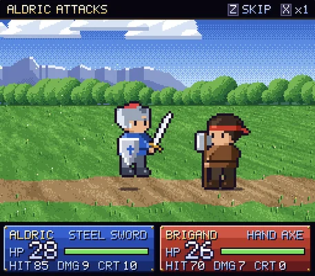
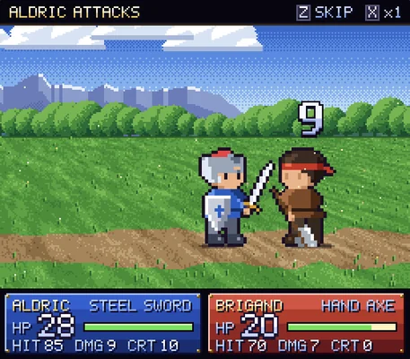
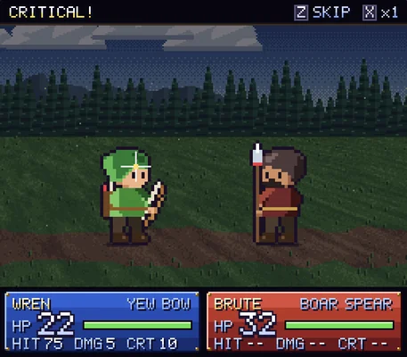
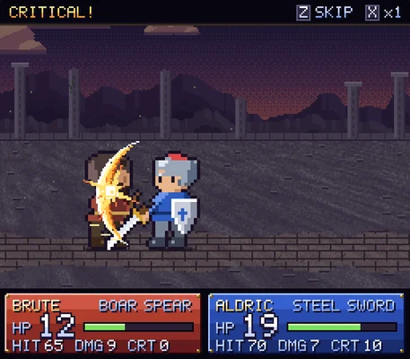

Side-view clash cut-in
A side-view cut-in where both fighters leap, strike, counter and land criticals. An add-on for any game.
What it does
When a turn or tactics battle confirms an attack, the game cuts to a staged side-view scene.
Made fortactics / strategy RPG (grid map, attack + counter exchanges)turn-based RPG with single-target physical or spell attacksmonster battler or card battler that wants a dramatic attack scenewargame or skirmish game with a battle animation toggle
Tested: 12/12 runs on unseen games passed · visual review 7.6
Moments
Four moments from the demo

Play from here
Play from here
Play from here
Play from hereTake it home
Hand it to your agent
- Copy the prompt. It is written for a game your agent has never seen.
- Give it the module (
clash-cutin.js) and its README. - Play your game. The prompt ends with checks your agent can run.
# Add Side-view clash cut-in to my game Add the game element below to MY existing game, which you have not seen. It is a finished module file given with this prompt: - `clash-cutin.js` (one global, `GameDNA_ClashCutin`), API reference `clash-cutin.README.md` README example names are placeholders. ## Shared premises 1. **Include each module file verbatim; never edit it.** Load it with its own `<script src>` before the game's script, or paste it unchanged into its own `<script>` tag. If a module seems to need a change, adapt my game around it and tell me. 2. **Resolution:** keep my game's native resolution and integer scaling as they are. Call module draw functions on my 2D context inside the same transform as my sprites (one module pixel = one game pixel), and keep my game's own image-smoothing setting (off for pixel art, on for smooth or HD games; never switch it). 3. **Time:** drive every module from one fixed 60 Hz step (1000 / 60 ms). If my loop uses variable delta time, accumulate it and run whole steps (at most 250 ms per frame). Turn/phase logic stays mine; modules still update every step to animate. 4. **Coordinates:** native screen pixels (world minus camera) unless a section says tiles. 5. **Art and names:** anything new you draw or name is original (no real game, character, place or brand names); English UI text; do not restyle my game. 6. **Hook, don't replace:** add calls or change bodies; never delete or rename a function.Open the whole prompt
Works well with
Combine it
Also pairs well with
Four-move menu battle with type matchupsPick one of four moves; type matchups decide the damage.
Combat forecast windowSee damage, hit chance and counters before you commit.
Bullet-pattern emitterEnemies cast fans, rings, spirals and flowers of bullets, always with a gap to slip through.
Card battle with intentsPlay cards against foes that show what they will do next.
Squad formation gridSquads on a front and back row, arranged by drag or keys.
Conditional tactic rulesUnits that act by your rules, and say which rule fired.